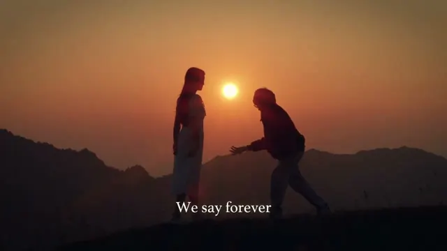
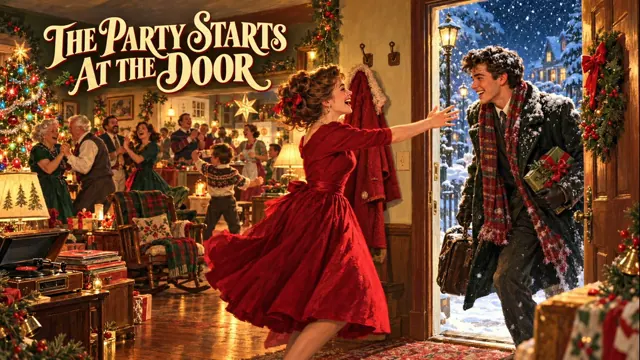
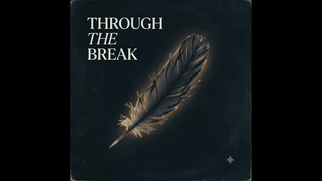
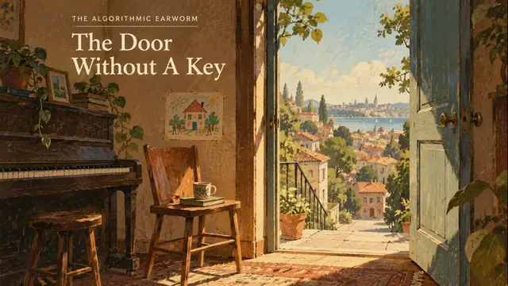
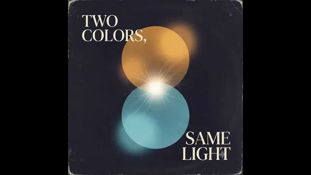
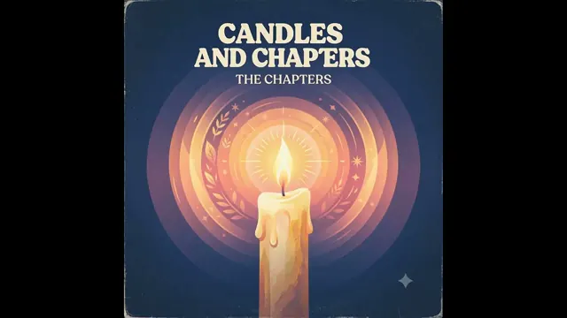
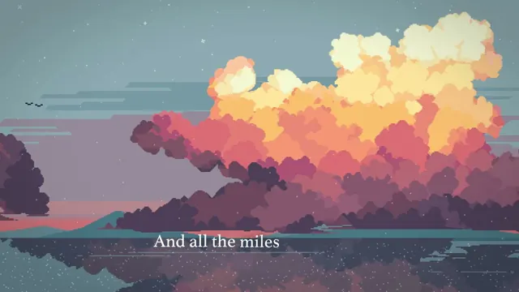

The Algorithmic Earworm
Where artificial intelligence makes music for real humans. Pop ballads, dance songs, and birthday songs, all made with AI tools.

An Inch of AirPop ballad- No EncoreDance pop

The Party Starts at the DoorChristmas pop
Through the BreakSoul pop
The Door Without A KeySoft rock ballad
Two Colors, Same LightPop ballad- Here's To Your YearBirthday song

Candles And ChaptersBirthday song
An Inch of Air, pixel art versionPop ballad
About this experiment
The songs on this channel are made with AI tools. The channel is an experiment in what AI music can do today, so it is kept here, apart from the software and the games.
The links open YouTube, which has its own privacy policy. This page does not load anything from YouTube until you click.